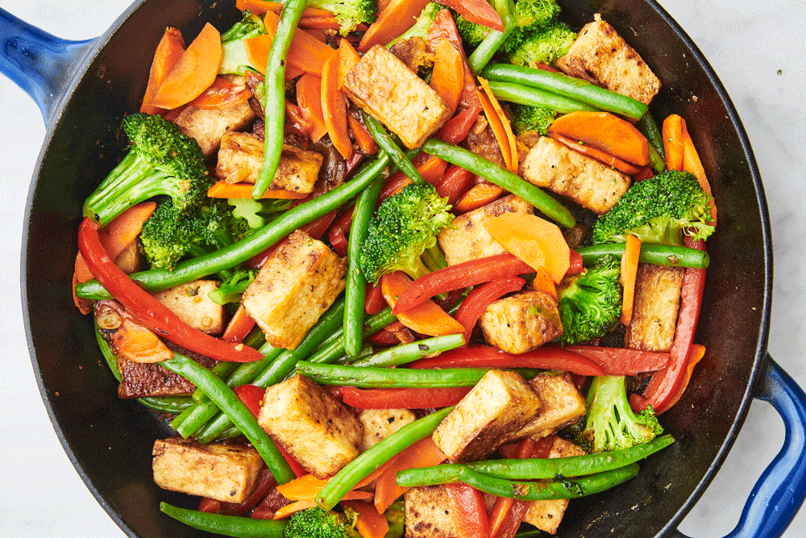

Description
This delicious Stir-Fry is a real show stopper - and a great way to use up some of those pesky bits of veg that don't get eaten. Tofu is what we're going to use in this one, but you could easily swap it out for a meat product like beef or pork, or even a veggie product, like Quorn chicken.
Ingredients:
- 500g Tofu (cubed)
- 3 Carrots (peeled)
- 2 Celery Sticks (chopped)
- 300g Brocolli (chopped)
- 100g Sugar Snap Peas (chopped)
- Noodle Nest (one per person)
- 1 Vegetable Stock cube
- Seasoning
Steps:
- Wash the vegetables.
- Preheat a Wok and add a splash of oil.
- Add Tofu. Cook for 10 minutes or until they start to go crispy.
- Add the vegetables and cook for a further 5 minutes.
- Break Vegetable Stock cube into Wok.
- Add Noodle Nests to Wok and cover with vegetables.
- Add your choice of seasoning. We recommend Chilli Powder, Paprika, Turmeric, Garam Massala, Pepper, Chilli Flakes.
- Pour 400ml boiling water into wok.
- Let simmer for 5 minutes.
- Serve with chopsticks.
Back to Top
Back to Recipes